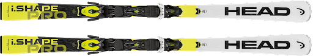
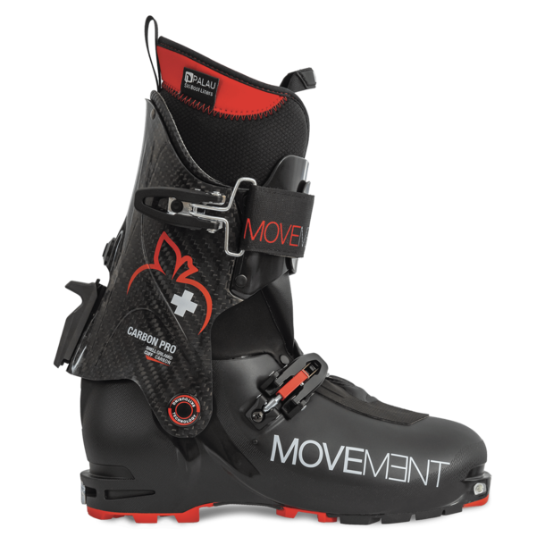
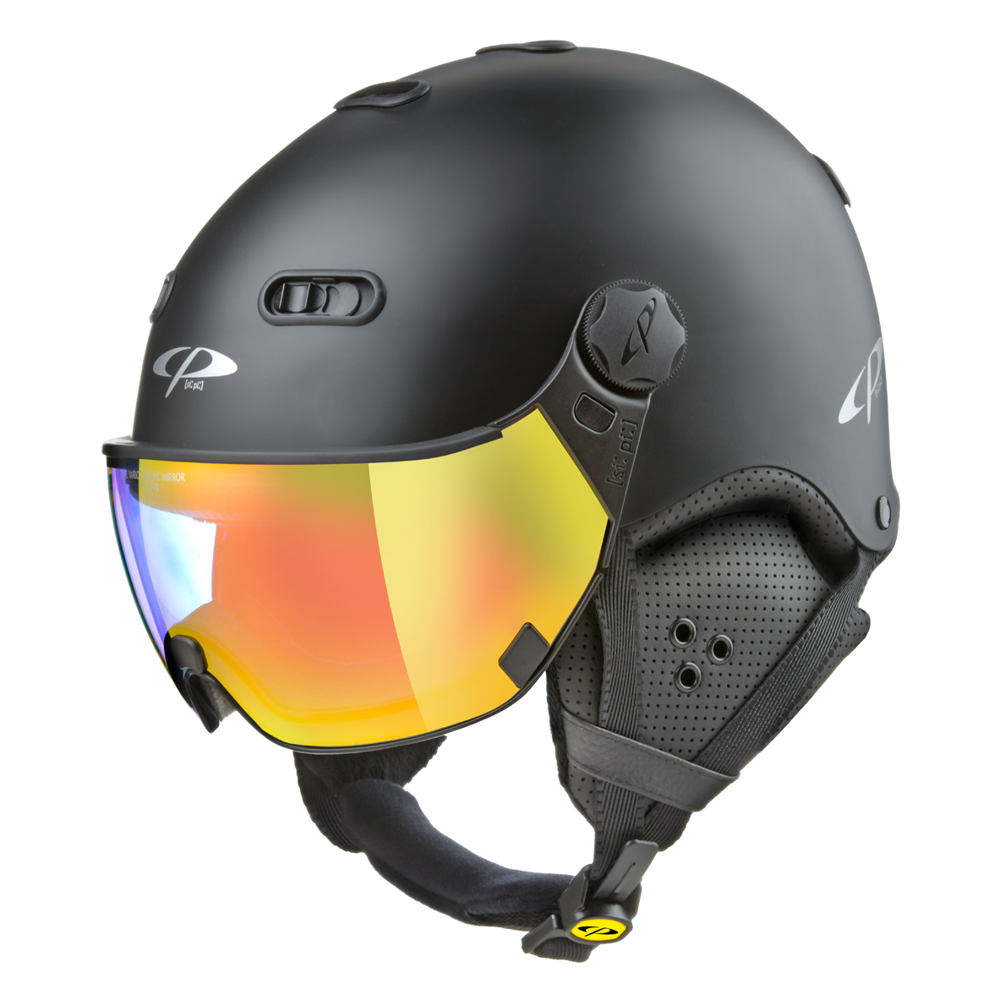

Klik hier Als je wilt gaan skiën is toch wel belangrijk dat je ski's hebt. Er zijn verschillende soorten ski's: Race ski's, slalom ski's, freestyle ski's en toerski's om een paar te noemen. Zelf gebruik ik normale ski's.
Wil je meer weten over de verschillende soorten ski's? Hier links naar de soorten ski's.
Race ski's
Slalom ski's
Freestyle ski's
Toerski's
 Naast ski's is het ook belangrijk om skischoenen te hebben. Skischoenen zijn speciaal gemaakt zodat je heel makkelijk in je ski's kunt klikken. Veel skischoenen hebben gespen, maar er zijn ook schoenen met veters.
 Nam pretium turpis et arcu. Duis arcu tortor, suscipit eget, imperdiet nec, imperdiet iaculis, ipsum. Sed aliquam ultrices mauris. Integer ante arcu, accumsan a, consectetuer eget, posuere ut, mauris. Praesent adipiscing. Phasellus ullamcorper ipsum rutrum nunc. Nunc nonummy metus. Vestibulum volutpat pretium libero. Cras id dui. Aenean ut eros et nisl sagittis vestibulum. Nullam nulla eros, ultricies sit amet, nonummy id, imperdiet feugiat, pede. Sed lectus. Donec mollis hendrerit risus. Phasellus nec sem in justo pellentesque facilisis. Etiam imperdiet imperdiet orci. Nunc nec neque. Phasellus leo dolor, tempus non, auctor et, hendrerit quis, nisi.